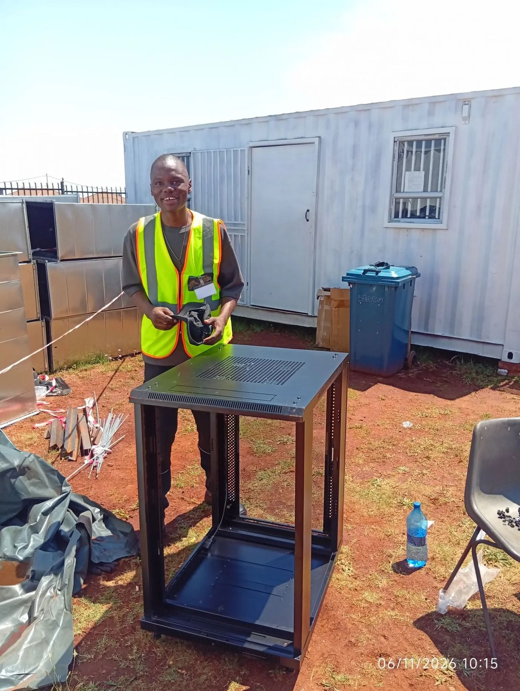
Portfolio · 2026
Building automation, IT infrastructure and software, treated as one system.
IT Administrator at Spartcon Technologies. I develop building management interfaces on Tridium Niagara 4, set up the infrastructure and remote access behind them, and build internal business software.
01 / Profile
I'm Siphiwe Khumalo, known to most people as Ronnie. I started in freelance web development and hands-on IT support. That mix taught me that problems rarely stay in one layer: a "broken dashboard" can be a network route, a controller setting or a single point name.
Since joining Spartcon Technologies as IT Administrator in August 2026, I have worked on live building automation projects. I developed the operator interfaces for the ARC Glasshouse and Department of Health (Middelburg) BMS deployments, set up the site infrastructure and remote access behind them, and built internal business applications for the team.
I'm still early in my career, and I treat each deployment as a chance to deepen my engineering knowledge. In October 2026 I completed Tridium's five-day Niagara training and passed the exam with 83%.
Trace a problem through hardware, network, controller and software before deciding what to change.
Confirm every command, verify it against the controller, and never present old data as live.
Clear interfaces, written guides and on-site training, so the system keeps working after I leave.
Role
IT Administrator, Spartcon Technologies, since August 2026
Focus
Building automation · IT infrastructure · Software development
Milestones
ARC handover 9 Oct 2026 · Tridium exam 30 Oct 2026 · Middelburg handover 11 Nov 2026
02 / Experience
Aug 2026 – Present
Full time
Spartcon Technologies
Before Aug 2026
Freelance
Independent
01 Aug
Joined Spartcon Technologies as IT Administrator.
09 Oct
ARC Glasshouse BMS handed over.
30 Oct
Passed the Tridium Niagara 4 exam with 83%.
11 Nov
Department of Health Middelburg BMS handed over, staff trained.
01
Building Management System · Software
A custom operator interface for the Agricultural Research Council's glasshouse facility. It monitors and controls ten greenhouses from wall-mounted touchscreens, running on a Tridium Niagara 4 controls platform.
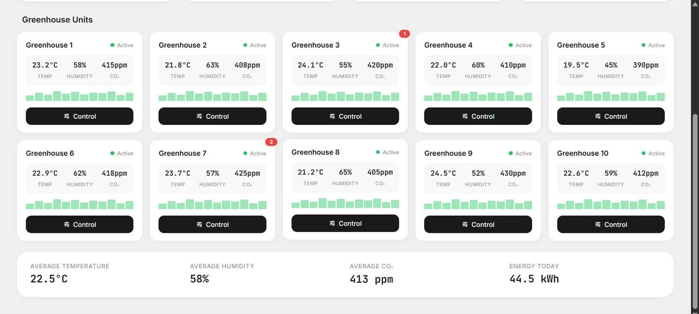
The glasshouse is made up of ten research greenhouses. Each one needs climate conditions and irrigation that staff can see and adjust quickly, from screens on the floor rather than an engineering workstation.
The interface is a touch-first web application that reads and writes points on the Niagara station. It provides a greenhouse overview with live readings and short trends, a control view for each unit, irrigation scheduling for ten valve schedules with start and stop times, and system settings for user roles, notification thresholds and device configuration, behind a sign-in screen.
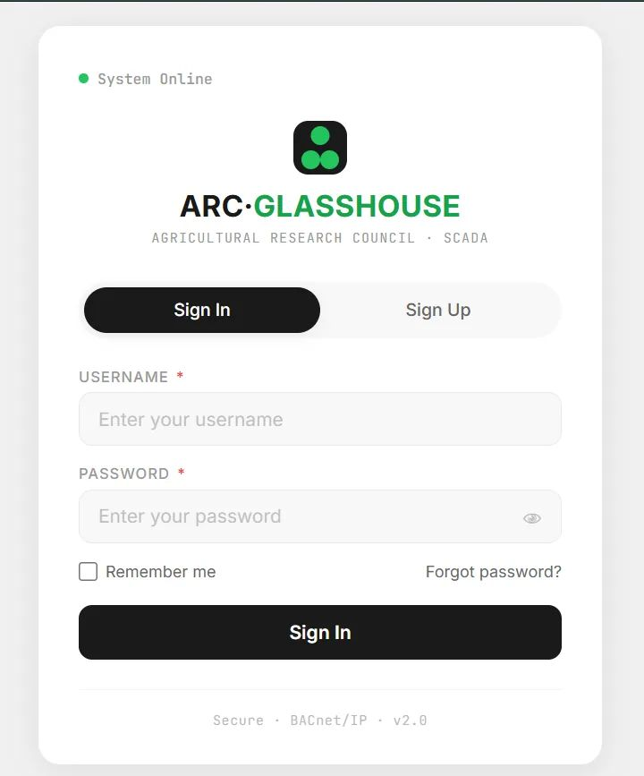
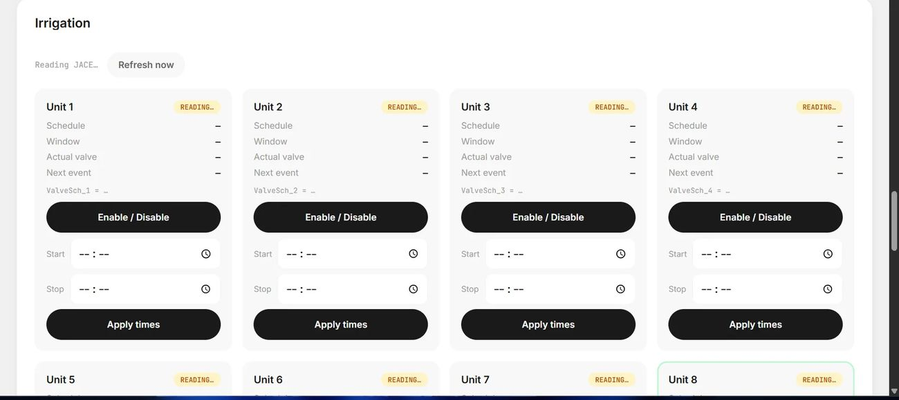
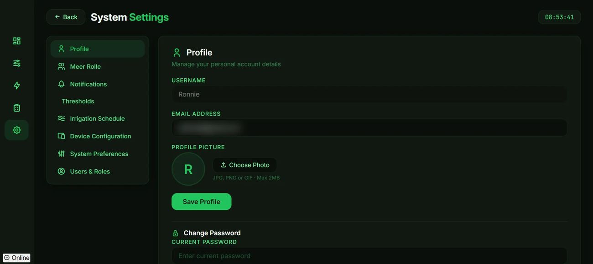
ChallengePoint names in the station did not always match the documentation, which made the irrigation schedules hard to bind correctly.
ApproachConfirmed the exact slot names on site against the Workbench configuration, then bound each of the ten valve schedules to its verified point.
ChallengeThe touchscreens are used standing, at a distance, often during other work.
ApproachLarge controls, high-contrast readings and one clear action per button, sized for touch rather than a mouse.
ChallengeOperators must never mistake an unanswered request for a real value.
ApproachEvery value shows a clear "Reading…" state until the controller responds.
The interface was deployed across the facility's ten touchscreen displays, and the project was handed over on 9 October 2026.
Scope: my responsibility was the software, meaning the BMS interface and its deployment. The hardware, electrical and infrastructure work on this project was carried out by other project participants.
02
Building Management System · Software · Infrastructure
A live monitoring and control dashboard for a pharmaceutical warehouse. It covers 16 HVAC units, 6 room sensors and 6 fire dampers connected through a Tridium JACE, running 24/7 on site and reachable securely from off site.
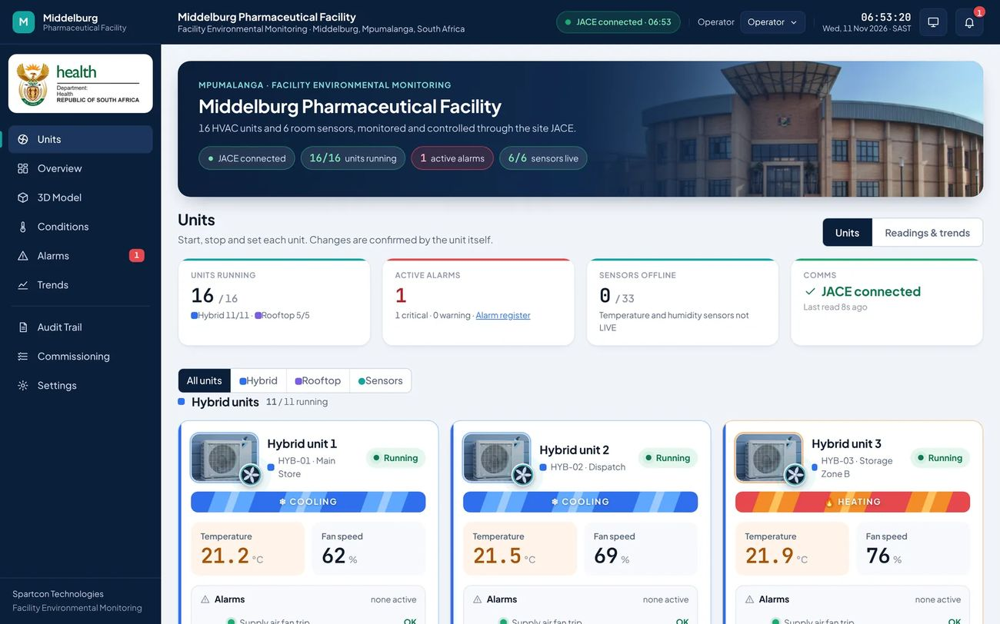
Medicine storage depends on stable temperature and humidity. The facility has 5 rooftop units, 11 hybrid units, 6 room sensors and 6 fire dampers. Staff needed one clear place to see conditions, act on alarms and adjust the rooftop units, without opening engineering tools.
A small gateway on the host PC holds the controller credentials, so browsers never see them. Only an approved list of points can be written to. Every command needs confirmation and is verified by reading the value back from the controller. A shared cache and command queue protect the JACE from multiple viewers, and every point is logged every five minutes for trends and CSV export. The dashboard has Units, Overview, 3D Model, Alarms, Trends and Audit Trail views, with Viewer, Operator and Admin roles.
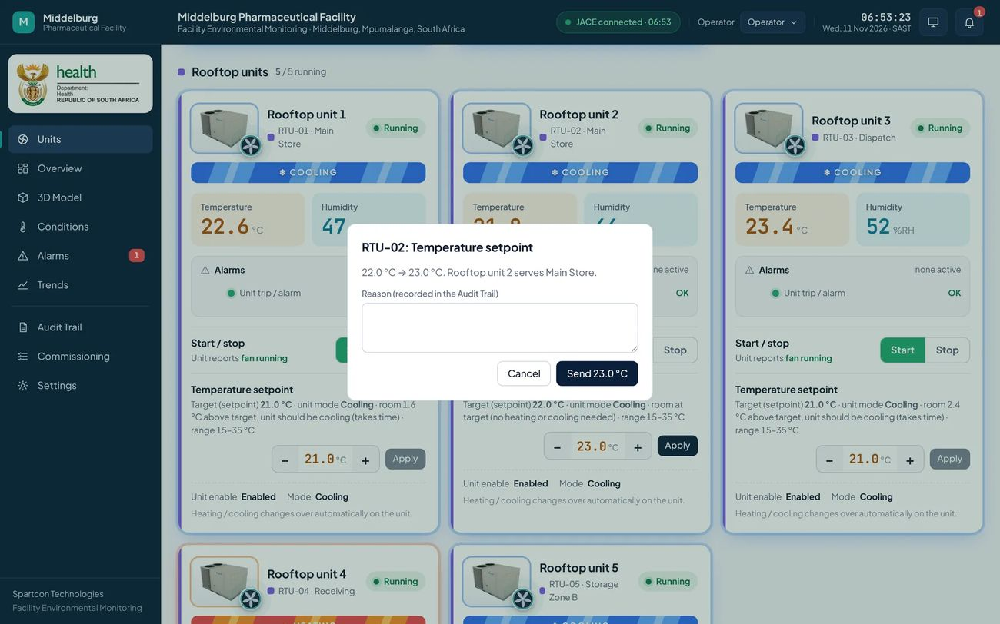
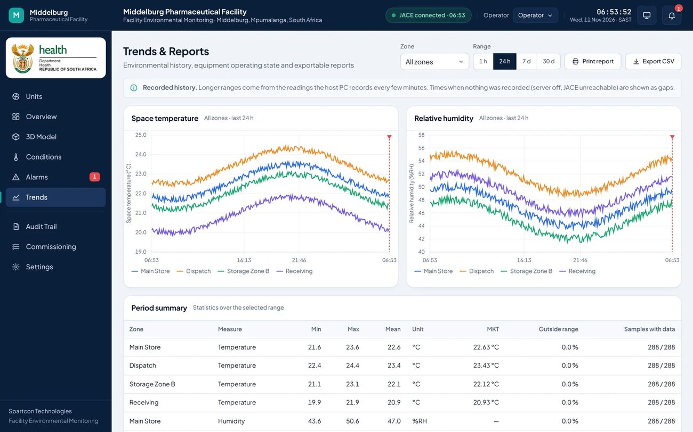
ChallengeThe rooftop units would not switch between heating and cooling automatically. Leftover high-priority commands in the controller's priority array were overriding the changeover.
ApproachTraced the fault to the priority array, made heating/cooling read-only in the dashboard, and documented how the integrator should release the overrides.
ChallengeDuring commissioning some points were not yet mapped, and others used different names on site, including the fire damper points.
ApproachWrote diagnostic scripts that probe the controller for each expected point, then corrected the mapping on site with the integrator.
ChallengeThe site has no public IP address, but the client wanted to monitor it remotely.
ApproachSet up an encrypted private network (Tailscale) to the host PC, with a step-by-step access guide for client staff.
ChallengeValues from a lost connection could be mistaken for live data.
ApproachEvery reading shows its state (LIVE, STALE or OFFLINE), and controls lock while the connection is down.
The system was handed over to the Department of Health on 11 November 2026, with staff trained using a 10-page illustrated user guide. It runs continuously on site and records every reading for later export.
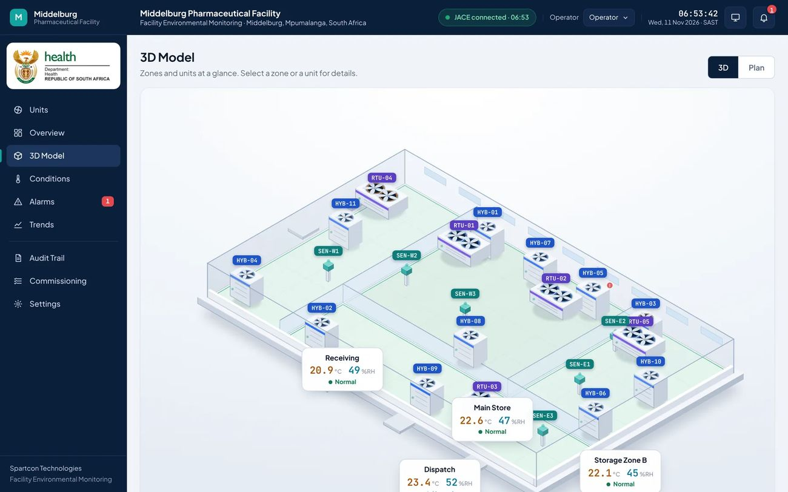
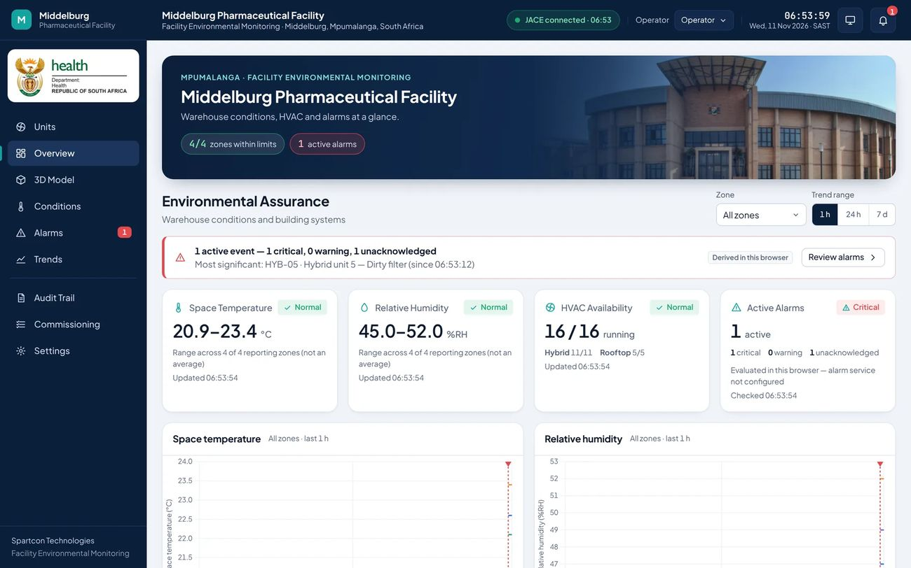
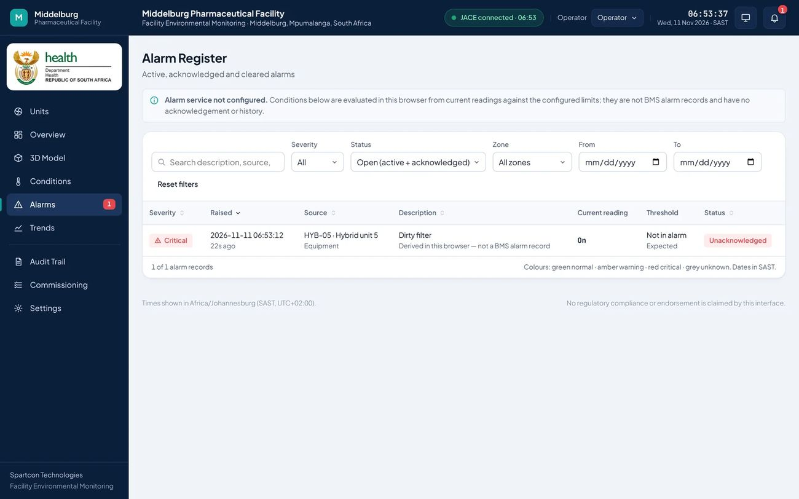
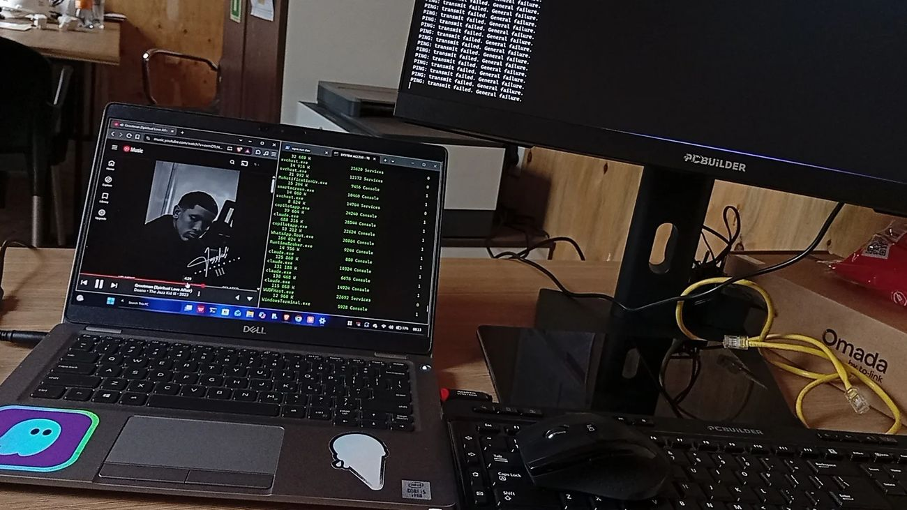
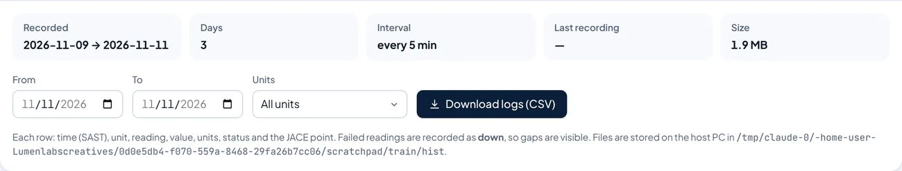
03
Business software · Internal application
An internal web application that turns supplier invoices and receipts, whether PDFs, scans or phone photos, into checked, structured records, with a full audit trail.
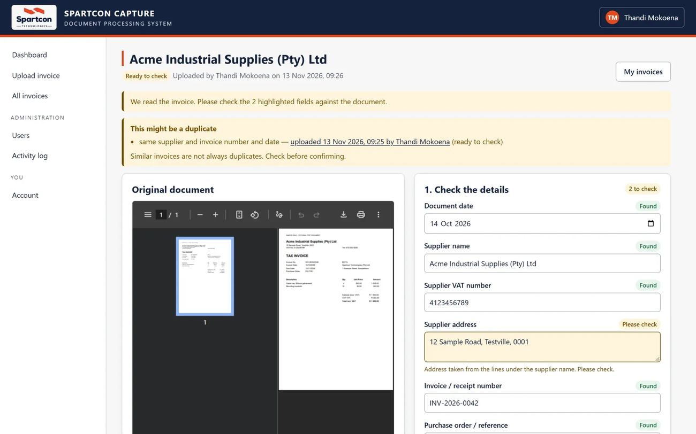
Capturing invoice details by hand is slow and error-prone. Spartcon Capture reads each uploaded document and fills in the key fields. A person still checks the result before anything is confirmed.
Extraction is never perfect. Instead of trusting it blindly, the interface highlights exactly which fields need a human check, and why. For example, an address taken from the lines under the supplier name is flagged for review.
Accountability matters for finance data. Every sign-in, upload, extraction and confirmation is written to an append-only log, which can be verified for integrity.
A complete invoice workflow, from upload and extraction through review, duplicate detection and export, with an audit trail at every step.
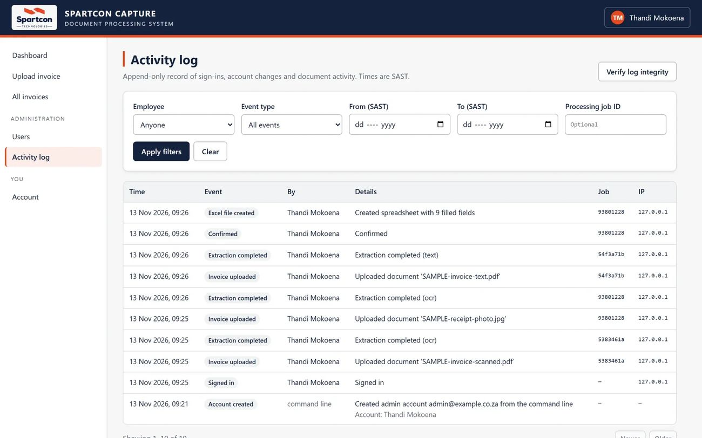
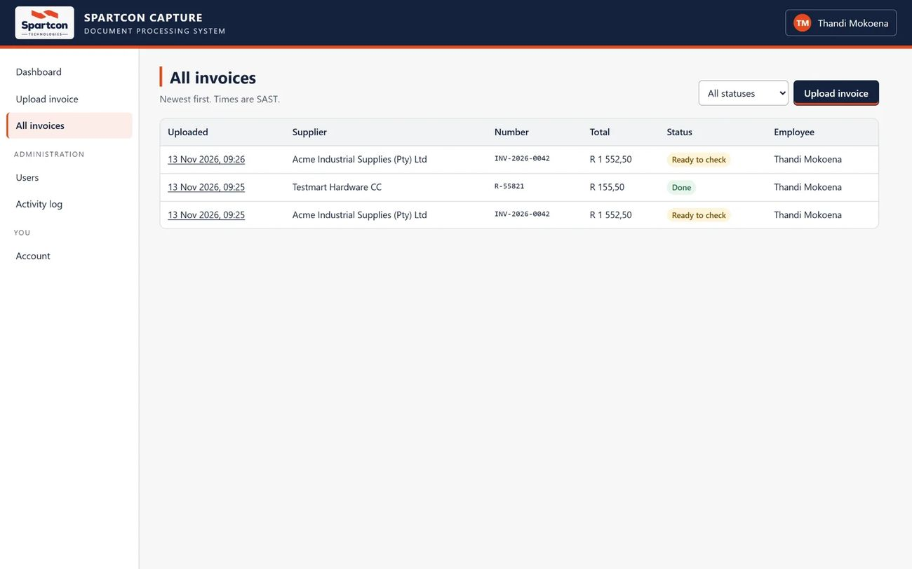
04 / More work
A time and attendance app for site and office staff. Clocking in uses the server clock and a location check against the selected worksite.
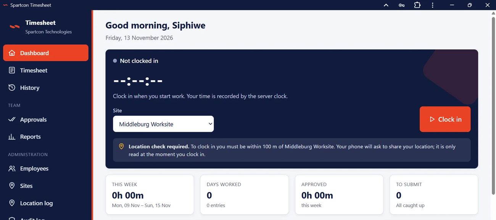
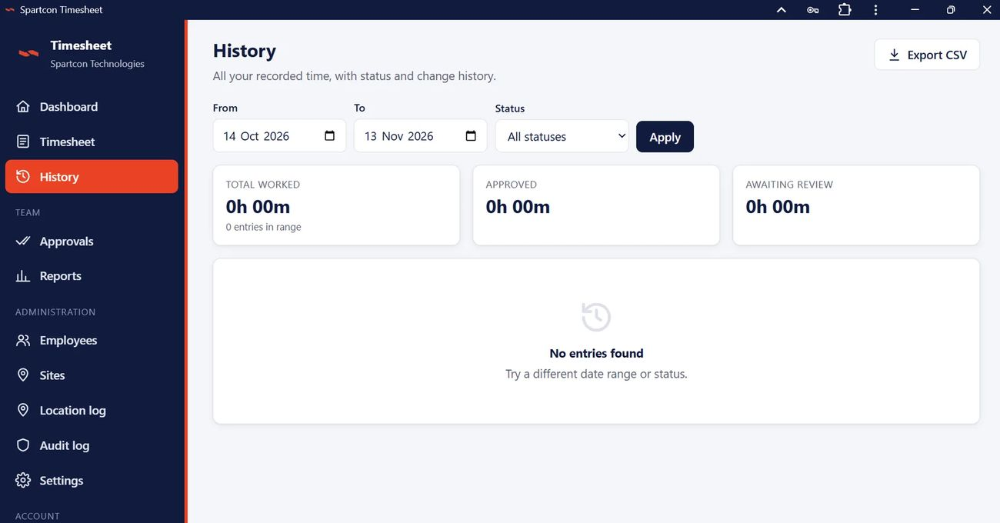
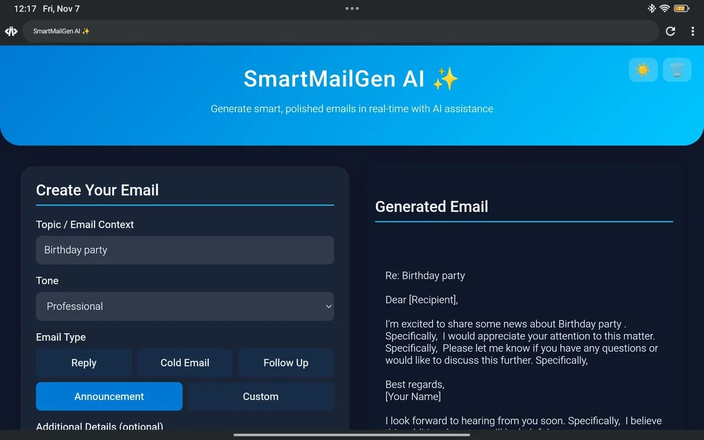
Generates context-aware email replies by connecting a simple interface to the OpenAI API. HTML · CSS · JavaScript.
siphiwe-khumalo.github.io/Smart-Email-GeneratorMovie discovery with live data fetching, filtering and recommendations from the TMDB API.
siphiwe-khumalo.github.io/CineVerse.htmlA conversational FAQ assistant that answers repetitive support questions.
siphiwe-khumalo.github.io/not-so-Smart-Ai-FAQs-Assistant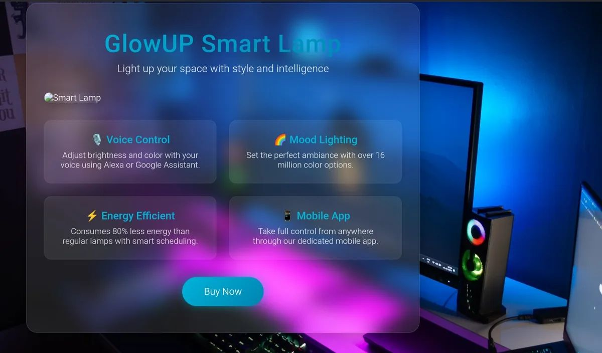
A product landing page with an interactive showcase and a deliberate conversion flow.
siphiwe-khumalo.github.io/Glowup-Product-Landing-Page-05 / Skills
Grouped by discipline. Each item is something I have used on real work.
01
02
03
04
05
06
06 / Certifications & training
Tridium · Niagara 4
A five-day course on the Tridium Niagara 4 framework, the platform behind the JACE controllers used on my BMS projects.
83%
Certificate
The official certificate will be added once issued.
Tourism studies. They shaped how I think about technology from the user's side.
07 / Contact
I'm open to conversations about building automation, IT infrastructure and software projects, and to roles where those disciplines meet.
© 2026 Siphiwe Khumalo · 13